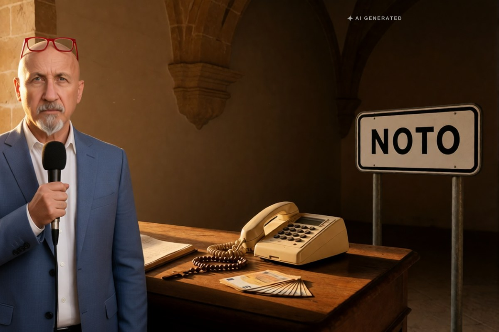

Cronaca · 29 ottobre 2026
Truffe a parrocchie e conventi in tutta Italia, la pista porta a Noto

Una finta impiegata comunale chiedeva ai parroci di restituire un contributo versato per sbaglio, su una carta ricaricabile. Dei dieci indagati dalla procura di Torino, otto vengono dal Siracusano.
di Franco Zanghì
Il copione era sempre lo stesso. Una donna telefonava in parrocchia, in convento o in monastero e si presentava come impiegata del Comune, in un caso come funzionaria della Conferenza episcopale italiana. Diceva che l'ente aveva versato un contributo più alto del dovuto e che, per sbloccarlo o per non perderlo, bisognava restituire la differenza. Poi al telefono arrivava un finto funzionario di banca, a confermare.
La cifra richiesta era spesso di 997 euro, a volte 2.500, 3.500, fino a quasi 6.000, da versare su una carta ricaricabile Postepay che, secondo l'accusa, veniva svuotata appena arrivavano i soldi. A Sanremo una madre superiora avrebbe versato 1.000 euro due anni fa; ad Aversa un monastero di suore benedettine ne avrebbe persi 5.997. In molti casi il raggiro non è andato in porto.
Da Sanremo a Palermo, e dieci indagati
Secondo la procura di Torino le telefonate hanno raggiunto istituti religiosi in tutta Italia, da Sanremo a Trieste, da Napoli a Palermo, fino a Vittoria e a Valguarnera. L'inchiesta è condotta dalla Guardia di finanza di Cremona, e l'accusa è di associazione per delinquere finalizzata alle truffe.
Gli indagati sono 10 e, scrive La Sicilia, 8 vengono dalla provincia di Siracusa, molti da Noto. Secondo i magistrati a capo del gruppo ci sarebbero Concettina Galizia, 45 anni, siracusana che vive a Torino, e Corrado Morana, anche lui del Siracusano; gli organizzatori sarebbero Emanuele Giuseppe Tullo e Luigi Tullo, residenti a Torino, e il siracusano Maurizio Di Falco. Agli altri, sempre secondo l'accusa, toccava prelevare il denaro e trasferirne una parte con i money transfer, mentre carte e telefoni sarebbero stati intestati a persone estranee.
Il giudice deve ancora decidere
La procura ha chiesto l'arresto di tutti e dieci. La legge prevede oggi che, prima di decidere, il giudice per le indagini preliminari li ascolti: il 28 ottobre sono stati interrogati quattro siracusani, Corrada Galizia, Salvatore Galizia, Corrado Morana e Francesco Riscica, che hanno sostanzialmente respinto le accuse. Il giudice non ha ancora deciso.
Per tutti gli indagati vale la presunzione d'innocenza fino alla sentenza definitiva.
Lo stesso copione, sette anni dopo
Il metodo non è nuovo. Nel maggio 2019 i carabinieri di Torino arrestarono una banda guidata da una donna che si faceva chiamare zia Ketty: era Concettina Galizia, accusata allora di 86 truffe a religiosi anziani, con la stessa storia del contributo pagato in più. E nel 2024, racconta Il Tirreno, una procura siciliana ha chiesto il processo per episodi del 2017 e del 2018, con alcuni degli stessi nomi.
Resta il punto che riguarda tutti: nessun Comune, nessuna Regione e nessuna Conferenza episcopale chiede indietro del denaro su una carta Postepay. Quando arriva quella telefonata si riattacca e si chiamano le forze dell'ordine.
Fonti
- La Sicilia, «Si fingevano dipendenti comunali o funzionari della Cei per truffare conventi e parrocchie: 8 siciliani nei guai», 29 ottobre 2026
- BlogSicilia, «Truffe a parrocchie e conventi in Italia: 10 indagati, 4 siracusani interrogati dal gip», 29 ottobre 2026
- Giornale di Sicilia, «Truffe ai danni di parrocchie e conventi, otto siciliani nei guai», 29 ottobre 2026
- SiracusaOggi, «Truffe a parrocchie e conventi, anche quattro siracusani interrogati nell'inchiesta di Torino», 29 ottobre 2026
- Il Fatto Quotidiano, «Truffe a parrocchie e conventi, arrestata la banda: 86 colpi in tutta Italia», 23 maggio 2019
- Il Tirreno, «Porcari, l'annuncio dei falsi contributi per truffare l'istituto religioso», 27 dicembre 2024
Alla data di pubblicazione il giudice per le indagini preliminari non ha ancora deciso sulla richiesta di arresto. Il numero di otto indagati siracusani è riportato dalla sola Sicilia, e non è stato possibile verificare l'esito dei procedimenti del 2019 e del 2024.